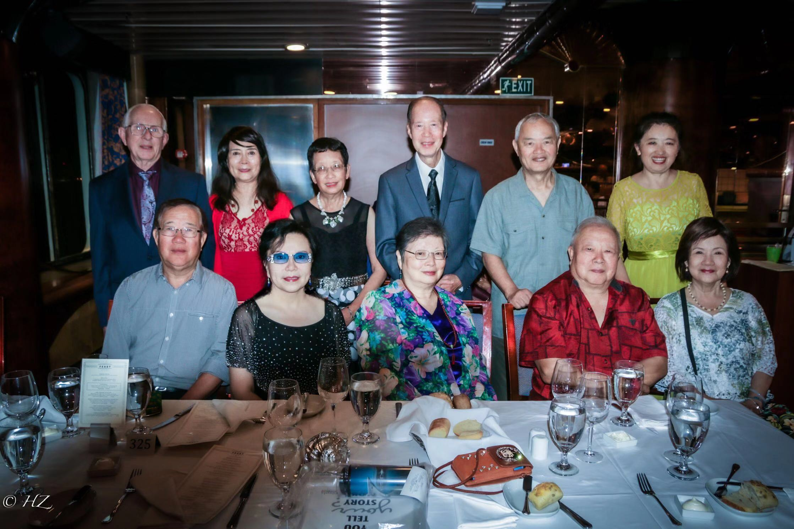

North America Chinese Writers Association Los Angeles
北美洛杉磯華文作家協會「海上賞明月」采風團，9月2日從洛杉磯啟程，途經 Catalina Island，到達墨西哥的Ensenada，日前順利返航。
會長段金平、副會長楊強夫婦、財務長岑霞、監事陳十美、顧問盧遂顯、理事張炯烈、張五星、張良羽夫婦、作協網站副總編趙紅等參加了采風活動。

采風團一行在卡達琳娜島參觀了由箭牌口香糖大王威廉1929年建造的阿維隆（Avalon）維多利亞式的別緻建築。團員們說，窄小卻充滿陽光的明媚街市，讓大家留連忘返。
在墨西哥的艾森那達（Ensenada），采風團員們盡情領略了這巴加半島上最古老的社區風貌。一間接一間的矮小鋪面，陳列著五花八門的精緻手工製品，質樸的當地人給團員們留下深刻的印象。
在遊輪上，大家分別講述了自己最喜歡的作家以及他們的作品。資深老師們的博學以及謙和讓年輕的會員敬仰，深感受益匪淺！
一次采風，數篇不同角度的遊記。大家踴躍提筆，盡情抒發，期待在不同的刊物展現！